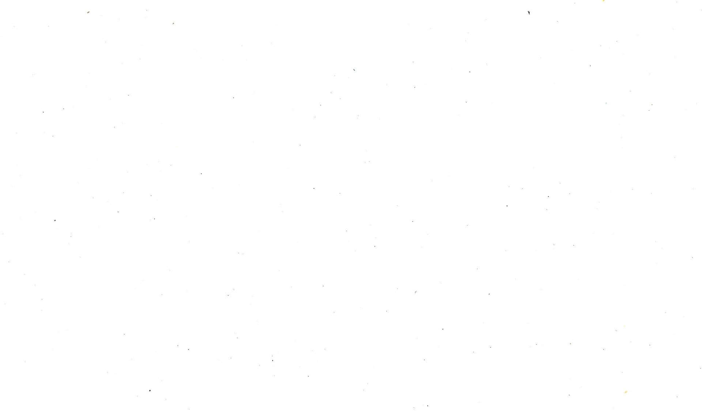

BANGUIS STAT
By: Cebastian Floyd F. Banguis. All rights reserved 2023


BANGUIS STAT
By: Cebastian Floyd F. Banguis. All rights reserved 2023
In the era of digital connectivity, the time grade 9 students spend on the internet has become a compelling and influential aspect of contemporary youth culture. The dataset at our fingertips serves as a comprehensive window into this digital realm, capturing the nuances of how they allocate their time in the vast online landscape. As we embark on this exploration, the dataset unfolds as a repository of valuable insights, encapsulating the diverse online activities that captivate the attention of teenagers. From social media interactions and gaming endeavors to educational pursuits and content consumption, each data point encapsulates a moment in the virtual lives of adolescents.
Understanding how grade 9 students navigate the internet is not merely an exercise in data analysis but a venture into the evolving landscape of social dynamics, information consumption, and digital citizenship. The dataset invites researchers, educators to scrutinize the intricate relationships between online behaviors and various facets of adolescent development
We have 2 variables: Self rating and Gender
Gender:
Piechart:
Histogram:
We had 52 respondents in total, and it seems that most of them were female, or to be specific, 37 out of 52 (71%). The remaining 15 (29%) were male.
Self Rating:
Piechart
Histogram
For the self-ratings, we asked our batchmates to rate how well they're doing academically on a scale of 1–10, and it seems that most people answered 8 (13 people, 25%), while the least answered were 1 and 2, because no one answered them (0%). The second least answered was 3 — only one person answered it (2%)
We have 2 Quantitative variables: Grades from last year and time spent on the internet in hours
Grades from last year:
Mean, Median and standard deviation
The mean here is approximately 84.115. Meaning, the average grade 9
student (according to our sample survey), is on the Director’s List. This is due to
the fact that the frequency of 1.75(78) and 1.5(84) is equal and 1.25 had a
higher frequency than both of them.
The median here is 84. This means that at least 50% of the sample size had a
grade of 90 or more. br
The standard deviation is 5.246. This means that the grades of grade 9 students
deviated from the mean by ±5.246.
Histogram:
Before we begin, there are some clarifications.
The Class Intervals (and their corresponding values) are:
72-74 = 1
75-77 = 0
78-80 = 16
81-83 = 0
84-86 = 16
87-89 = 0
90-92 = 19
(Showing the Class Intervals helps comprehend the Class Boundaries)
Moving on, the shape of the histogram roughly resembles another left-skewed
distribution. We can say this because the calculated skewness is negative (-
0.2212261785). And also, when observing the graph, the peak (90, 19) is more
on the left side than the right side
Boxplot:
In the graphing parts of GWA from Last Year, we can see that it is a positively skewed/right-skewed distribution due to its peak, and our own calculations and the box plot solidify this point. As for the more calculation-based parts, it shows that all measures of center used are of different values, not only that, it appears that they are of lower value than the general version of GWA from Last Year. Additionally, the values for standard deviation are still comparatively similar to the general ver.
Hours used in the internet:
Mean, Median and standard deviation:
The mean here is 7.25. This means that the average hours a teenager in Grade
9 of PSHS-SMC uses solely on the internet is 7.25 hours.
The median here is 8. This means that at least 50% of the sample size goes on
the internet for 8 hours per day or for longer hours.
The standard deviation is 1.856. This means that the average hours of internet
that Grade 9 students make up deviates from the mean by ±1.856 hours
Boxplot:
The Box Plot for hours used on the internet is rather one-sided. Meaning, the
median (which is 8) is completely on the left side of the box.
There is one reason for this, the number usually has the highest frequency in
the distribution.
From previous calculations shown here, the value ‘8’ has the biggest
frequency of 18 observations and it is a LARGE number compared to the
others.
So, this is why Q3 and the Median merged.
And since the median is at the third quartile, this means that at least 25% or
more are just the number 8 or more than it
Histogram:
The shape of the histogram roughly resembles a left-skewed distribution. Yes, I must admit that there are many gaps in the graph. But, we can say this because the calculated skewness is negative (-0.2856962865). And also, when looking at it, the peak (7-8, 18) is more on the left side than the right side.
